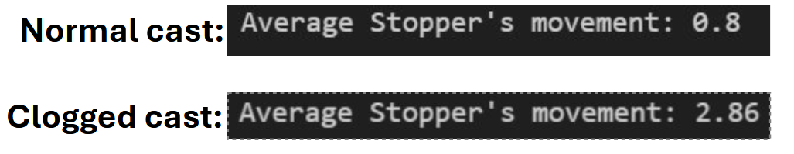

Insights
Ikäheimonen et al (2016) note several factors contributing to nozzle clogging. These factors include steel cleanness and aluminium content and steel flow rate. Outokumpu provided the data for the grade of steel, but it included only Outokumpu’s internal grading, and it was not explained to the students. Steel flowrate was possible to monitor from the data, but no big fluctuations were observed. The submerged-entry nozzle's clogging can be predicted by several factors. One major factor is the stopper rod movement. The movement can include unpredictable jumps, and a gradual climb in the stopper position as seen in the group's graphs. According to Ikäheimonen et al (2016) other factors include steel flow rate, steel cleanness and nozzle material. In our example, we can see the stopper movement fluctuate greatly:
In the picture above it can be clearly seen how the normal cast’s movement is relatively much lower than the clogged one.